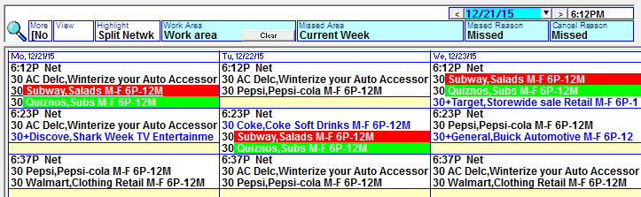

Split Network Spots
When a split network contract has been scheduled, the split network spots will be viewable on the Spots screen. Split network spots have a cyan background color when shown on the Spots screen.
The primary split network spot (the one that will air on the most stations) will be above the other split network spots that it is combined with, and will be a slightly darker cyan color than the other split network spots.
Spots Screen Rules for Split Network Spots
- Split network lines cannot be used to create fill spots.
- You cannot swap split network spots with regular scheduled spots.
- Split network spots may be joined with other split network spots. If the joined split network spots do not cover all available stations, then the split fill screen (described later in this document) must be used to create fill spots for the other stations outside of the split network regions that are being used.
Additional Spots Screen Features
Region Names
To see the region name used by a split network spot, right click and hold the mouse button down over the spot. The region name and include/exclude value will be shown in a green bar near the spot.
You can also select “Region” from the “More” dropdown to see the region abbreviation to the left of the spot length.
Split Network Spot Highlight
To make the split network spots more visible, from the “Highlight” toggle near the top of the screen, select “Split Network”. When this is selected, the primary split network spots will be shown with a red background, and the secondary spots will be shown with a green background.

Moving and Joining Spots
The system will automatically attempt to join split network spots when the contract is scheduled, but split network spots can also be moved and manually joined to other split network spots. To move and join split network spots:
- Mouse click on a split network spot and hold the mouse button down.
- Drag the spot onto another split network spot until the word “Join” appears.
- Release the mouse button to move the spot and join both spots to the same break.
When split network spots are not joined but in the same break, they will both have the same cyan background color and be displayed as primary spots. In that case, they are using the avail time equal to the length of the two spots, rather than sharing or splitting the avail time.